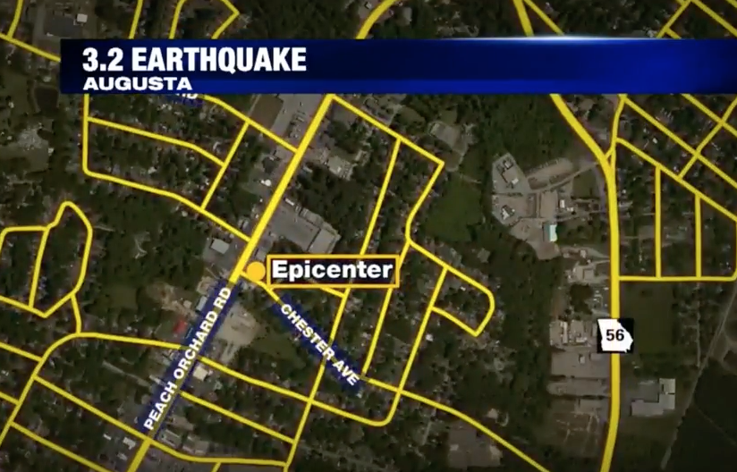
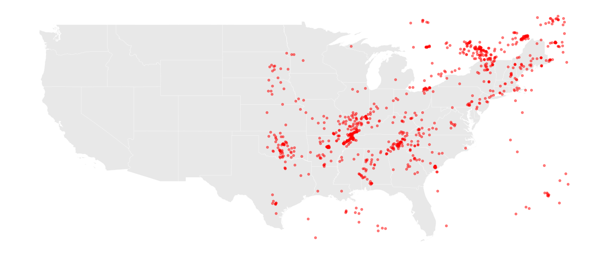
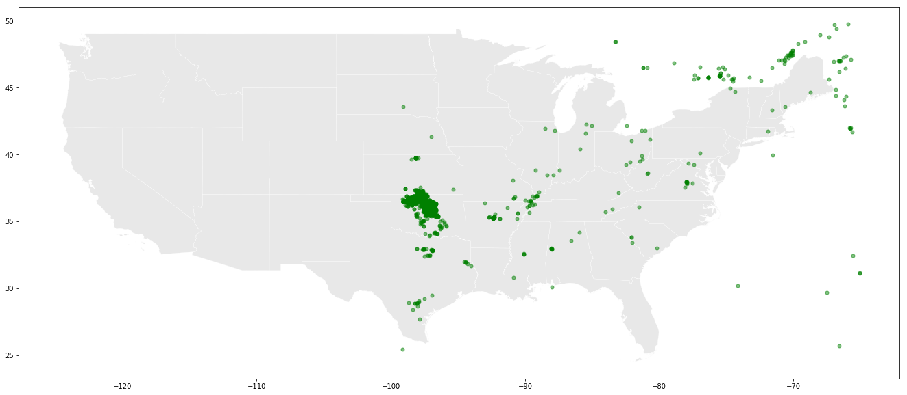
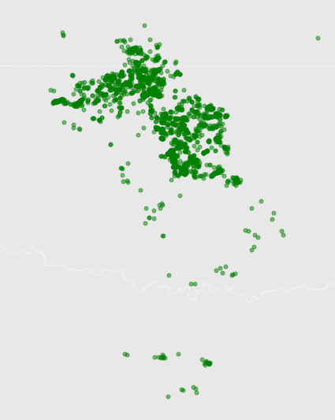
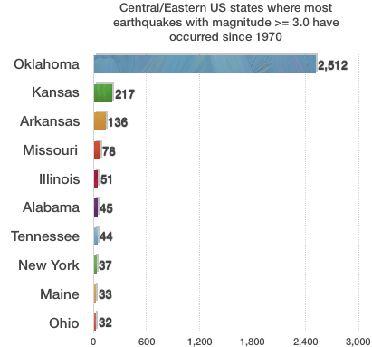
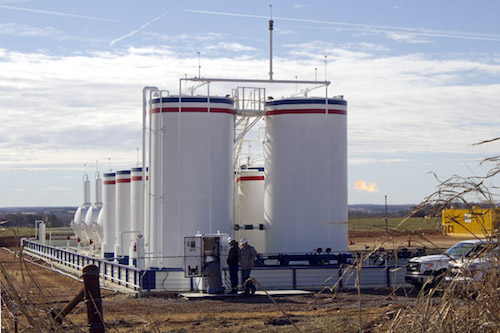
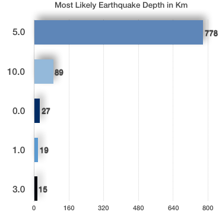

Did you feel it? Vibrations travel a lot eastward lately
Why are earthquakes of a magnitude 3.0 and above in the central and eastern US more frequent now than they have ever been?
On the morning of June 20, 2017 an earthquake hit the City of Augusta in Georgia. According to the U.S. Geological Survey, it was centered 3.27 miles (5.26 km) southwest of Augusta with a 3.2 magnitude. Local residents reported the earthquake displaced furniture in homes and triggered security alarms at homes and businesses while Mayor Hardie Davis issued a statement urging residents to be mindful of falling debris and to take refuge under a strong structure if the ground begins to shake. It has so far been Georgia’s largest earthquake this year.
<
And for anyone who thought earthquakes were a West Coast thing, the 2011 5.8 magnitude quake centered in rural Virginia was an eye opener. The tremors were felt as far away as Toronto, led to the evacuation of government buildings in Washington, D.C., suspension of takeoffs and landings at airports across the Northeast; and the automatic shutdown of two nuclear reactors in Virginia near the epicenter, according to reports.
It was among the major earthquakes on the East Coast of all times, with the second largest being an estimated 7.3 magnitude temblor that struck Charleston, S.C., in 1886.

ALT="image">
Earthquakes have increased almost tenfold in the last decade
But according to USGS, the number of earthquakes in the central and eastern United States has dramatically increased over the past decade. For that reason it has asked for additional federal resources of at least $1.5 million per year (on top of already allocated $2.5 million) that will be used to support operations of the existing stations, to integrate data from these stations into existing data analysis procedures and to further improve strong-motion station average. The goal is to increase understanding of seismic danger and societal risk in the eastern half of the US. It is indicative that the number of earthquakes has increased by 967% during the current decade so far compared with the previous one.
However when the US map showing the total number of earthquakes in the central and eastern part from 1970 to 2009 is placed side by side with the very same map when it only shows the earthquakes in the current decade, this increase can only be considered as a very well hidden mystery.


Wait a second. Is it maybe Oklahoma?
What is missing in the larger scaled map in the decisive influence of Oklahoma in the dramatic surge. But the more we zoom the clearer the picture gets.

Oklahoma tops the list of US central states with the most earthquakes in recent years. It is indicative that before 2009, there were, on average, two earthquakes a year in Oklahoma that were magnitude 3 or greater. Last year, there were 907.

What’s more astonishing is that most of them are man-made, being triggered by the biggest and most important industry in the state: oil and gas production, not from fracking though. And additionally, despite the recent drop in earthquake rates (in 2016), Oklahoma and southern Kansas still face a significant risk of induced earthquake damage in 2017, according to the USGS report published on March 1st in the journal Seismological Research Letters.
Wastewater disposal has been causing it
So why do humans cause this? According to USGS, wastewater disposal is the primary reason. Most wastewater currently disposed of across the nation is generated and produced in the process of oil and gas extraction. But while gas and oil are collected in tanks for sale, the water is too salty to be recycled or used and that’s why it’s considered waste and has to go back in the ground.
However, getting rid of the water means sending it down a disposal well that’s drilled deep below the freshwater aquifers -- to prevent their contamination -- and the zone where it came from.
And while the vast majority of earthquakes cause little or no damage, the large volume which is being produced means more of the bigger ones are now likely to happen.

Moreover, although earthquakes are less frequent in the central and eastern U.S. than in the west, they're typically felt over a broader area, according to the U.S. Geological Survey. Since 1970, the most often counted depth for vibrations of 3.0 magnitude or above is 5.0 km which makes sure they are more intensely felt.
